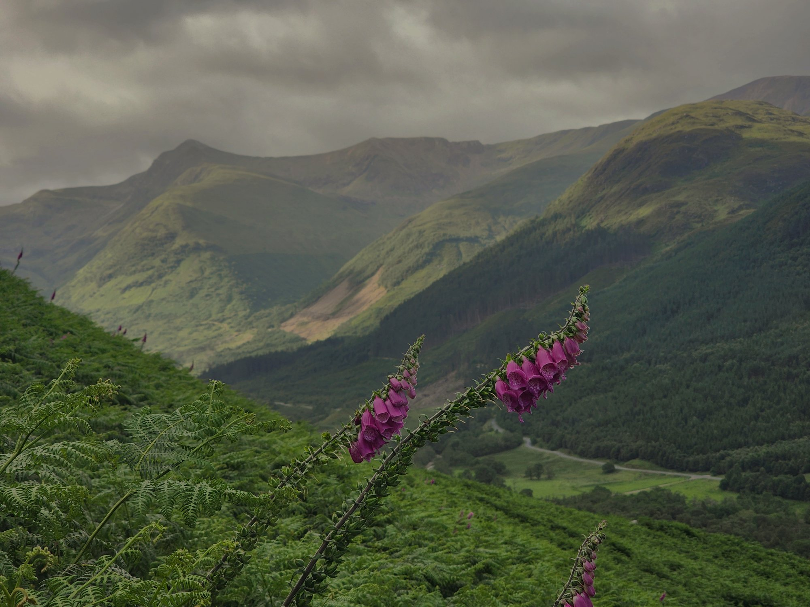
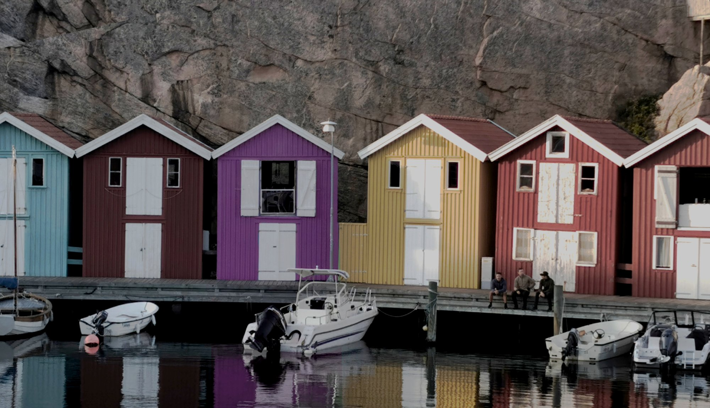
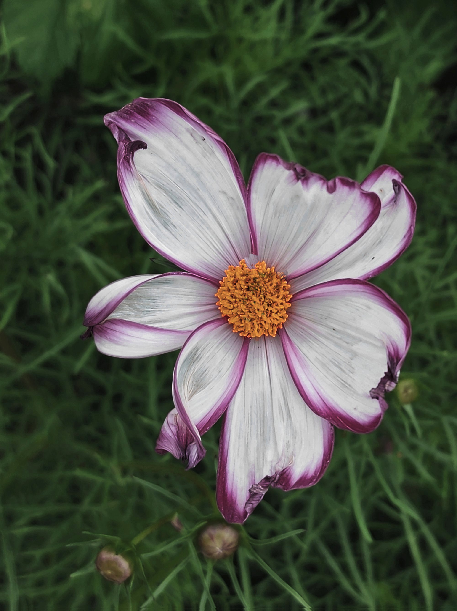

Allt levande behöver vatten
Jag har ljus och färgkorrigerat tre bilder så dom har samma känsla, har tagit bort en fluga och ändrat färg på en av stugorna.
Jag har använt mig av Photopea för att redigera alla bilderna och VS code för att bygga sidan.


